Worum es geht
Notennamen mit dem Griffbrett verbinden.
- Die sechs Saiten in internationaler Schreibweise benennen.
- Die Notenfolge C–D–E–F–G–A–B–C und die Vorzeichen ♯ und ♭ verstehen.
- Eine bestimmte Note auf mehreren Saiten und in verschiedenen Lagen finden.
- Oktavmuster verwenden, um Grundtöne über das Griffbrett hinweg wiederzuerkennen.
Zwei Kapitel
Kapitelübersicht.
Kapitel 01Saiten, Notenfolge und OrientierungGeplant
Du lernst die internationalen Saitennamen E–A–D–G–B–E kennen. Die Notennamen laufen in der Folge C–D–E–F–G–A–B weiter und beginnen danach wieder bei C. Außerdem lernst du die Vorzeichen ♯ und ♭ kennen: Sie erhöhen oder erniedrigen einen Ton um einen Halbton. Wir verwenden internationale Notennamen: B ist der natürliche Ton, Bb der erniedrigte Ton.
Das Griffbrett hat nicht dieselbe einfache, gleichförmige Anordnung wie eine Klaviatur. Die Stimmung der Gitarre erzeugt an den Übergängen zwischen Saiten Verschiebungen; besonders der größere Abstand zwischen G- und B-Saite verändert vertraute Muster.
Dieselbe Tonhöhe kann auf mehreren Saiten vorkommen. Anders als bei der Klaviatur, auf der eine bestimmte Tonhöhe einer Taste entspricht, kannst du auf der Gitarre dieselbe Note an verschiedenen Stellen greifen. Der Weg dorthin und der Klangcharakter unterscheiden sich: In höheren Lagen näher am Korpus klingt ein Ton oft wärmer, nahe der Kopfplatte häufig heller oder metallischer.
Übung · Noten auf mehreren Saiten finden
Finde vorgegebene Noten an unterschiedlichen Stellen auf dem Griffbrett. Die genaue Auswahl der Noten, Saiten und Bünde legen wir in der Detailarbeit fest.
Kapitel 02Oktavmuster über den Hals verfolgenGeplant
Oktavmuster zeigen dir, wo derselbe Ton in einer anderen Lage wieder auftaucht. Sie sind eine erste Vernetzung des Griffbretts und helfen dir später im Pentatonikkurs, den Grundton schnell zu finden. Wir starten immer auf der tiefen E-Saite und verwenden dieselbe Griffbrettgrafik wie in den anderen Gitarrenkursen.
Ausgangspunkt ist C im 8. Bund der tiefen E-Saite. Von dort folgen wir den Mustern:
- Kleines L: zwei Bünde vor und zwei Saiten weiter zum C auf der D-Saite im 10. Bund.
- Großes L: vom C auf D10 drei Bünde vor und zwei Saiten weiter zum C auf der B-Saite im 13. Bund.
- C-Akkord-Muster: von B13 zwei Bünde vor und drei Saiten zurück zur A-Saite. So findest du C im 15. Bund der A-Saite.
- Kleines L: von A15 zwei Bünde vor und zwei Saiten weiter zum C auf der G-Saite im 17. Bund.
Wenn deine Gitarre keinen Cutaway hat: Du kannst die hohen Lagen umgehen. C auf der B-Saite im 13. Bund liegt auch auf B1; C auf der A-Saite im 15. Bund liegt auch auf A3. Von dort führt dich das kleine L zum C auf G5.
